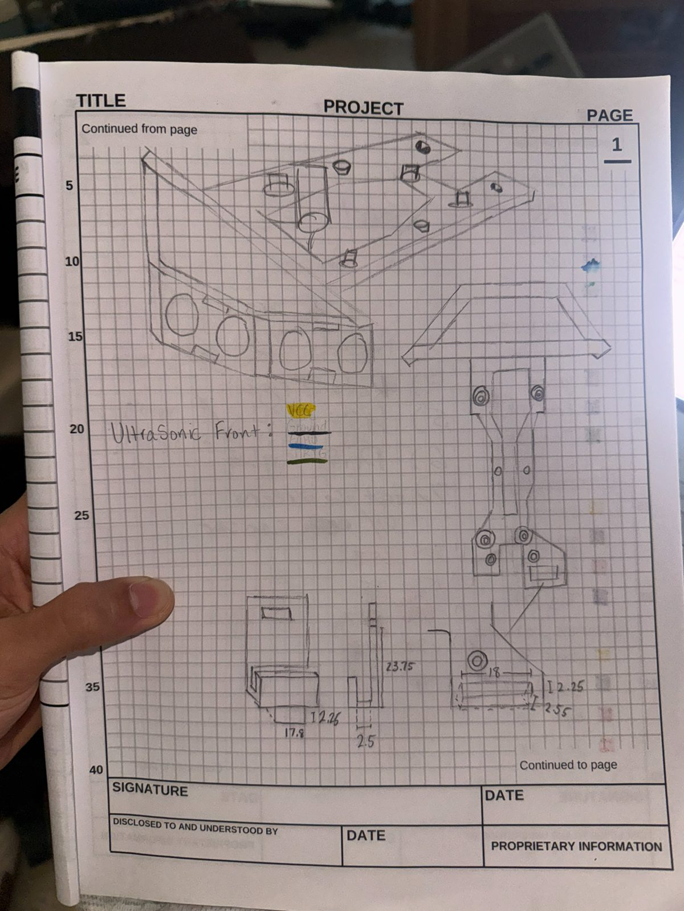
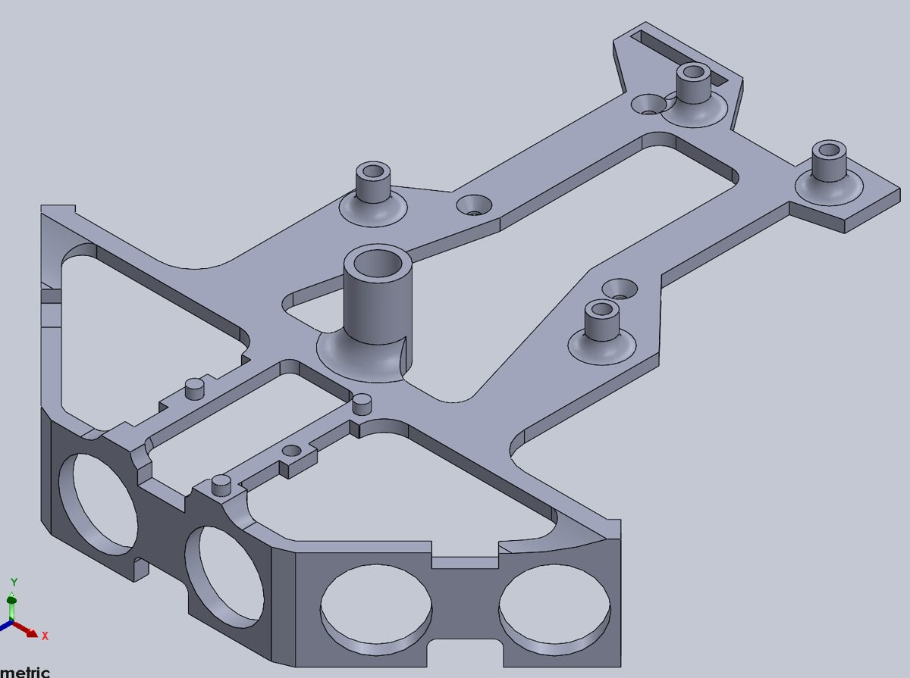
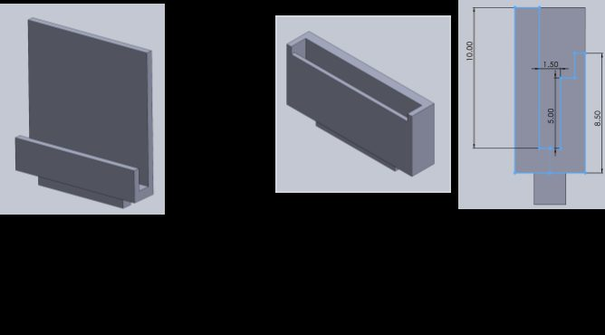
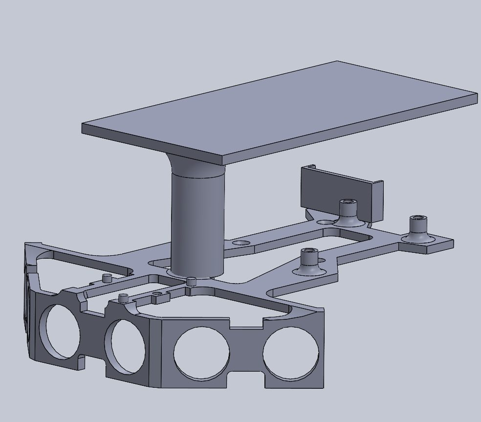
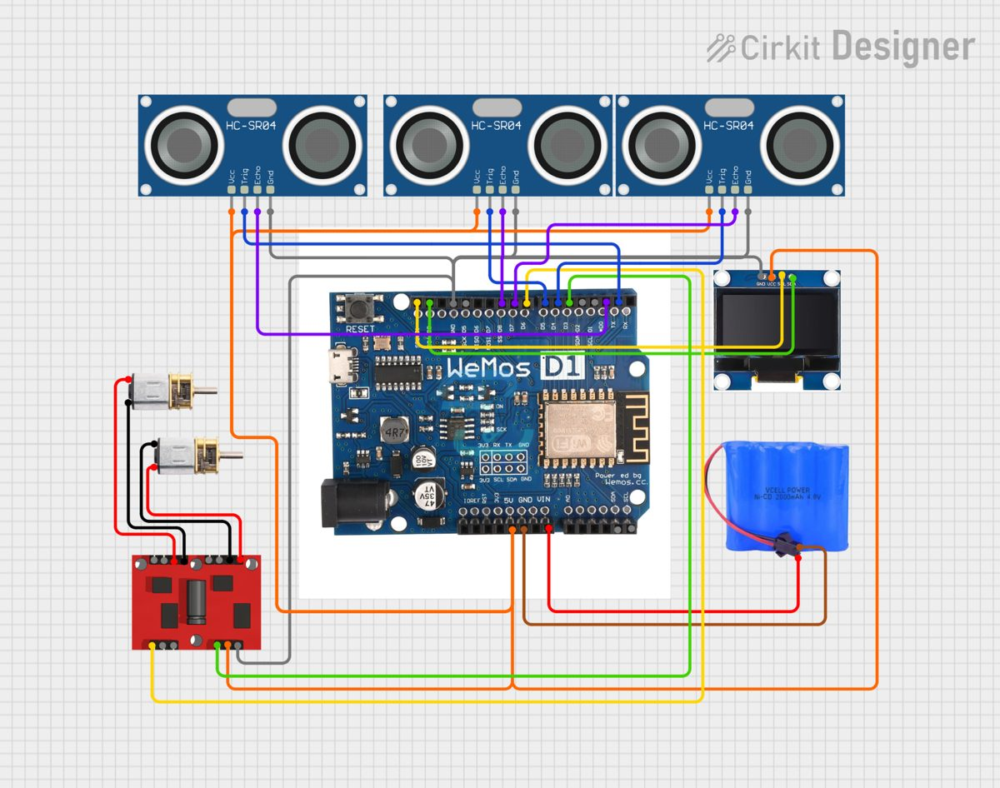
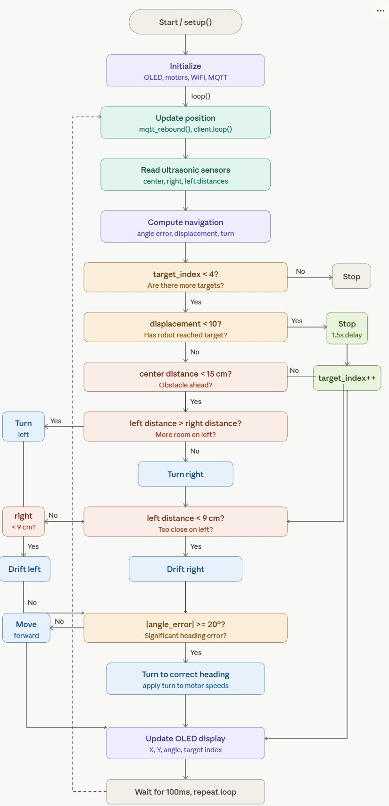
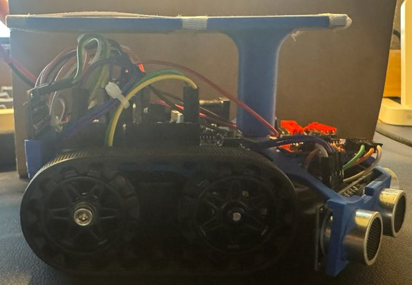

The challenge
Build a robot that drives to four checkpoints in under three minutes without hitting obstacles. Its position comes from a camera system that reads an ArUco marker on top of the robot and broadcasts X, Y and heading over MQTT.
The 3D printed attachment had to hold three ultrasonic sensors, an OLED display, a motor controller, a WeMos D1 board and the marker platform within a strict print-time limit.
Concept design
My first sketch set the design philosophy: a modular structure, with all three ultrasonic sensors facing forward so they would not interfere with each other or other parts. That three-sensor array stayed in every iteration.

Design iterations
The first CAD model was enclosed and material heavy. The OLED bracket was hard to load, the joint to the sensor housing was too thin, and the print would run long. I switched to an open frame, cookie-cutter style, which cut print time and weight and left rails for the motor controller.
Two smaller fixes mattered too. The OLED bracket was redrawn to match the screen’s exact side profile so it snaps in. The ArUco platform moved to a centered mount and lost its front overhang, which had risked blocking the sensors and caused printing defects. I added fillets to the corners for strength.



Electrical design
There was no breadboard. I built a ground harness with solder-seal heat shrink connectors, and spliced the 5V line the same way because the board has few 5V pins. The robot runs on a 4.8V Ni-MH pack.
Each sensor has its own trigger and echo pins, the OLED uses I2C, and the motor controller takes PWM signals from two pins on the WeMos D1.

Software
The code runs on a fixed 100 ms loop. It computes the bearing to the next checkpoint with atan2(), turns in proportion to the heading error, and stops for two seconds when within 10 units of a target.
Avoidance runs first each cycle: below 15 cm in front it pivots toward the side with more clearance, and below 9 cm on either side it drifts away from the wall. The OLED shows live position, heading and target number.

Assembly
The printed attachment sandwiches between the acrylic piece and the Zumo chassis with three screws. The OLED bracket and the marker platform friction fit, and the leftover screw holds the motor controller.

Testing and results
In the week 5 road test the robot drove straight, turned around at the end of the field and drove back using its front sensor. In the week 9 left-hand loop it drifted at first, so I tuned the motor values and added a right-side sensor to hold distance from the wall.
In the final navigation test it reached all four checkpoints in 32 seconds with no collisions. Tracking was unreliable when the robot moved too fast, so we slowed it down and tested in the upstairs lab.
What I would change
Use a full PID controller for smoother heading control, add logic to catch dropped or stale MQTT readings, angle the side sensors outward so they stop clipping obstacle edges, solder connections instead of relying on loose pins, and add a power switch. We mixed up battery power and ground once, which fried a board.